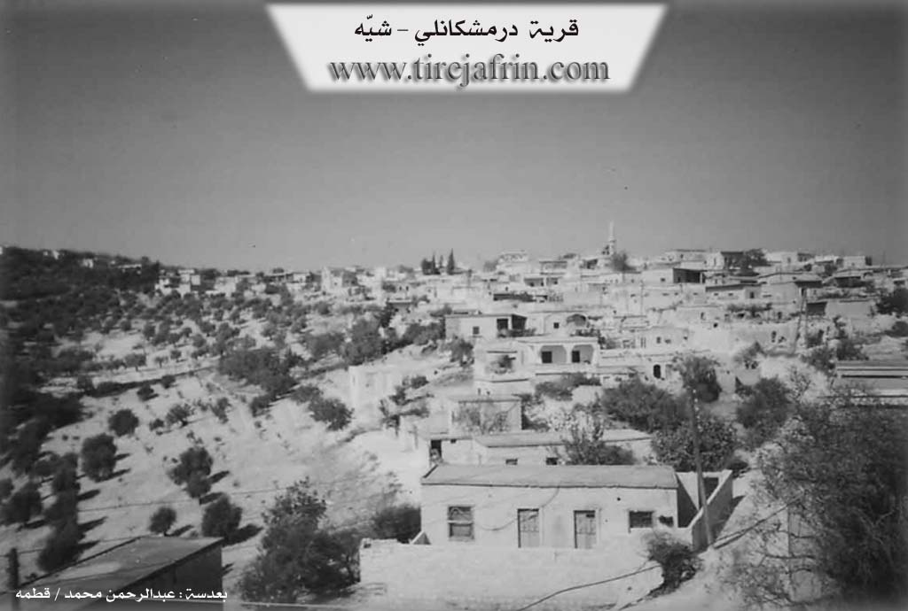

General Information
Nahiya (Subdistrict)
Şiyê
Also Known As
Dermish, Dermishkanli, Termişo, Termîşo, Tirmîşan, Tirmîşo, Tirmûša, Turmuşê, Şemo, درمش, درمشكانلي, ترميشو
Tribes
Gêsa, Kêtkorû, Milla, Tirka, Şemera
Families, Clans, etc.
Adnan Hesen, Bavkê, Belerî, Delî Beg, Ednê, Ekarî, Fatkulekî, Fîlmer, Gêncî, Hemed Îso, Hes Kûtî, Hesen, Hevîdî, Muserdî, Osman Ezîz, Walkî, Weysî

Photos

Basic Information about Tirmûşa
Source: Ax û Welat
Etymology: Derived from 'Tur û Mûşa' or historically linked to the ruin of 'Dêr Durmişa'
Foundation Date/Period: Approximately 500 to 550 years ago
Caves: Kun Heftar
Number of Caves: 24
Springs: Kaniya Ziyaretê, Kaniya Qorqê
Hills: Bêrê Bilê, Banî Qertel, Pozê Ciwana
Shrines: Sifir Dede, Dêr Durmişa
Ruins: Dêr Durmişa
Other Landmarks: Rezê Xeraba, Rezê Îsê, Geliyê Qiyametê
Source: Afrin Flo
Etymology: According to the elder Xalê Menan, the name relates to the phrase "tir û mîş" and the scattering of grass, connected to a history of agricultural abundance specifically olives that was lost when the rain and blessings departed
Springs: Kanîya Hewrê
Shrines: Sipî De Der
Trees: Merx
Source: Afrin 366
Springs: Mîzînê Kaya
Hills: Kokre, Rûta, Aşûr, Hesenan
Trees: Darê Remezano, Darê Delo
Other Landmarks: Mekteba Tirmîşê
Summaries
I. Summary from TirejAfrin Site (English) of Tirmûşa
Source: https://www.tirejafrin.com/site/kura%20afrin%20%20%20shiye%20-%20tirmusha.htm
The following is stated in the book جبل الكرد (عفرين) دراسة جغرافية Çiyayê Kurmênc (Efrîn): A Geographical Study by د. محمد عبدو علي Dr. Mihemed Ebdo Elî regarding Tirmşa, Dirmişkanlî, or Dirmiş (2106 inhabitants, 700 meters altitude):
Tirmûş or Tirmş is a name for a small type of pine tree, and there are many of them in the vicinity of the village. However, some say that the name is a compound formed by merging the two words for grapes (Tirî) and raisins (Mij), for which the village is famous. It is a small village located on the highlands of the western part of Çiyayê Xastiyan.
In the book عفرين .... نهرها وروابيها الخضراء Efrîn... Her River and Her Green Hills by the writer عبدالرحمن محمد Ebdulrehman Mihemed from the village of Qetme, the entry for Dirmişkanlî states: It is a village in Çiyayê Kurmênc, administratively belonging to the Şiyê district, Efrîn area, Heleb governorate. It is a large village located in the central part of the mentioned mountain on the southern slope of a limestone plateau, and its soil is clay.
It is surrounded by three valleys that extend deep and are harsh from all sides except the western side, where there is a slope. It is bordered to the north by a deep valley and the village of Mexarcix, to the south by a high mountain range and the village of Remedana, to the east by a deep valley in which spring water flows and the village of Mestûra Aşûr, and to the west by a rugged mountain range and the village of Erende.
The number of its houses is approximately 125, and its age is 400 years. Its dwellings are made of stone and mud with flat wooden roofs, while modern ones are cement and stone, spread to the north and west and along the public road. An electricity network is available, and drinking water comes from cisterns dug next to the houses and currently from a well belonging to the state.
The village contains a primary school and a mosque in the center of the village. The residents work in the cultivation of olives, vines, and fruit trees such as walnuts, apricots, and almonds. It connects to the township via a paved road up to the center of the village and vice versa. It is a beautiful village in terms of location, situated on the highest peak in the Efrîn area and neighboring villages.
Village Mukhtar: Xelîl Mistefa Sîdo
Preparation and Execution:
Manager of the Tirej Efrîn website: Ebdulrehman Hacî Osman
Sources:
- Book: جبل الكرد (عفرين) دراسة جغرافية Çiyayê Kurmênc (Efrîn): A Geographical Study by د. محمد عبدو علي Dr. Mihemed Ebdo Elî.
- Book: عفرين .... نهرها وروابيها الخضراء Efrîn... Her River and Her Green Hills by عبدالرحمن محمد Ebdulrehman Mihemed from the village of Qetme.
- Studies of Navenda Tirej Soft / Ebdulrehman Hacî Osman.
- 20/12/2013
II. Summary of Tirmûşa from Ax û Welat
Source: https://www.youtube.com/watch?v=7NwmilkHguM
The village of Tirmîşa (also referred to as Turmîşa) is situated in the Amanos mountains within the Şiyê district, approximately 26 kilometers from the center of Efrîn. Known for its rugged, mountainous terrain and forests, the village sits atop ancient layers of history, with residents maintaining a deep connection to their ancestral lands despite the difficulties of mountain life.
According to the village elder Hecî Fehim, the current settlement was established roughly 500 years ago. Originally, the community resided at a location called Şemo, situated between Erende and the current site. However, due to limited space or unfavorable conditions, they migrated to the higher, more defensible terrain of Tirmîşa. The village history is defined by the successive arrival of specific families (malbat). The Belerî family is considered the oldest, having arrived approximately 550 years ago, making them the original "owners of the land." They were followed by the Fatkulekî (the group moving from Şemo), and later the Muserdî, who arrived about 450 years ago from Hecî Bilîl. More recent arrivals include the Hevîdî family (150 years ago) and the Ekarî. The elder asserts that historically, the village was identified as Dêr Durmişa, a name linked to a local ruin, and mentions a spiritual connection to Melekê Tawûs.
The village landscape is dotted with 24 caves and significant natural landmarks such as Pozê Ciwana, Bêrê Bilê, and the valley of Geliyê Qiyametê. Water sources are vital to the community's memory, specifically springs like Kaniya Ziyaretê and Kaniya Qorqê. A prominent sacred site nearby is the shrine of Sifir Dede (or Sifrî Dede). A local caretaker identifies the shrine as belonging to Alevi Kurds and notes its ancient, unknown origins. This site serves as a place for vows and picnics, and it now houses the tomb of Şehîd Zinar, a local resistance fighter killed in 2012.
Socially, Tirmîşa is characterized by its self-sufficiency and longevity. The documentary features Elîf, a resident claiming to be roughly 120 years old (born circa 1895), who recalls the eras of the Ottomans and the British presence. The village also retains traditional craftsmanship, exemplified by Apê Mîso, who constructs wood-burning stoves from scrap metal, a skill he developed to help villagers cope with cold winters when fuel was scarce. Culturally, the village is home to artist Xelîl Pêrîşan, a member of Koma Engîzek, who returned to Tirmîşa after years of exile in Germany to reconnect with the land that inspires his music.
II. Summary of Tirmûşa from Afrin Flo
Source: https://www.youtube.com/watch?v=mVwiKbussN8
The village of Tirmîşa, situated in the mountainous terrain of the Afrin region, is characterized by its high altitude and cool climate. A returning resident, Mistefa, who had been away for 34 years, describes the natural landscape as having changed significantly over time. He points out a specific location formerly known as Sipî De Der, which once served as a zaret or shrine. In the past, this site was covered with merx trees and visitors would tie fabrics to the site to make wishes, although the trees have since been cut down and the site altered.
The village economy and daily life are described by the elderly resident Xalê Menan, who is approximately 78 years old. He explains that the agricultural output of Tirmîşa is limited due to the rocky soil. The villagers rely primarily on olive cultivation, although the harvest is irregular, occurring strongly only every other year. Grain crops like barley and lentils are not viable there. Water is also scarce, with no flowing water sources; the inhabitants rely on sarînc (cisterns) as wells do not reach the water table. A song heard in the documentary references a spring named Kanîya Hewrê. Xalê Menan discusses the origins of the village name Tirmîşa, associating it with the phrase "tir û mîş" and a time when the ancestors lived in caves and cultivated the wild land. He recounts that the area was once blessed with abundant olives, but the blessings faded when the rains ceased.
Xalê Menan serves as a keeper of oral history and recites a detailed portion of the famous regional epic of Dewrêşê Evdî. His recitation weaves together the history of several tribes, including the Milla, Kêtkorû, Şemera, Gêsa, and Tirka. The legend focuses on historical figures such as Temir Paşayê Millî and his daughter Adûlê. The story recounts a dramatic gathering where Adûlê prepares bitter coffee during a time of war and challenges the men of the tribe to defend their honor. The narrative culminates in the bravery of Dewrêşê Evdî and his companion Sadûn, highlighting themes of tribal loyalty, war, and romance that are central to the cultural memory of the region. The documentary portrays Tirmîşa not just as a physical location but as a repository of these deep cultural narratives preserved by elders like Xalê Menan.
II. Summary of Tirmûşa from Afrin 366
Source: https://www.youtube.com/watch?v=o66ji_uX_4A
The village of Tirmîşê, located in the Afrin region, is characterized by its rugged, mountainous geography and deep valleys. The settlement is situated in a high-altitude area noted for its cool winds ("bayê hênik"), even during the evenings. The surrounding landscape features several prominent landmarks and hills visible from the village, including Kokre, Rûta, Aşûr, and Hesenan. Additionally, specific trees serve as local boundary markers or reference points, such as Darê Remezano and Darê Delo.
The social fabric of Tirmîşê is defined by its resident families, referred to locally as "Mala" (House of). The transcript identifies numerous family lineages, including Mala Adnan Hesen, Mala Osman Ezîz, Mala Delî Beg, Mala Weysî, Mala Fîlmer, Mala Hesen, Mala Gêncî, Mala Ednê, Mala Bavkê, and Mala Hemed Îso. While the village maintains a strong sense of community, it has faced significant depopulation. Many houses are described as ruined ("xera bûye") or empty, with former residents having migrated to Europe or cities like Dihok. Despite this, the connection to the diaspora remains strong, with greetings sent to relatives abroad and hopes expressed that they will one day return to their properties.
Economically, Tirmîşê is renowned for its production of high-quality sumac. Villagers describe the harvest as a difficult, labor-intensive process that stains the hands, yet it is a source of agricultural pride. The sumac from this village is exported internationally, reaching markets in Lubnan (Lebanon), Urdun (Jordan), and Europe. The agricultural history of the village is further evidenced by the preservation of traditional tools. An elder in the video displays various antique implements, including a threshing roller known as a cercer, a yoke called a nîr, and a specific seeding plow attachment called a zerna, which was used for planting sesame.
Historical traces in the village include a school built from blue stone (kevirê şîn), which was active as early as the 1950s. The transcript notes that a significant earthquake ("zelzelê") occurred in 1956, which impacted the village's structures. The community also maintains a cemetery ("mezel"), where the tombs of notable family members like Ezîz Osman and the father of the host Adnan are located. A specific water source or landmark named Mîzînê Kaya is also mentioned as part of the village's local geography.
Transcriptions and Subtitles
| Source | Video | Subtitles | Transcript |
|---|---|---|---|
| Ax û Welat 1 | Watch Video | Download SRT | View Transcript |
| Afrin Flo 1 | Watch Video | Download SRT | View Transcript |
| Afrin 366 1 | Watch Video | Download SRT | View Transcript |
Foundation/Origin Information of Tirmûşa
Founded by four primary families: Fat Kulekî, Bêlêrî, Mûserdî, and Hebîdî. The village's original location, known as Şemo, was abandoned approximately 500 years ago due to poor land quality, prompting the move to its current site. The settlement was a gradual process, with the Bêlêrî family arriving first, followed by the Mûserdî family from Hec Bilêl village, and the Hebîdî family.
Source: Ax û Walat Transcript
Possible Village Name Meaning of Tirmûşa
Tirmûš: Name of a small type of pine tree, and there are many of them around the village. But some say that the name is composed of merging the words grape and raisin û Mûj Tiri which the village is famous for.
Source: TirejAfrin Site
The village's name is believed to derive from an ancient monastery, referred to as Dêr Mûşo or Dêr Mîşe.
Source: Ax û Walat Transcript